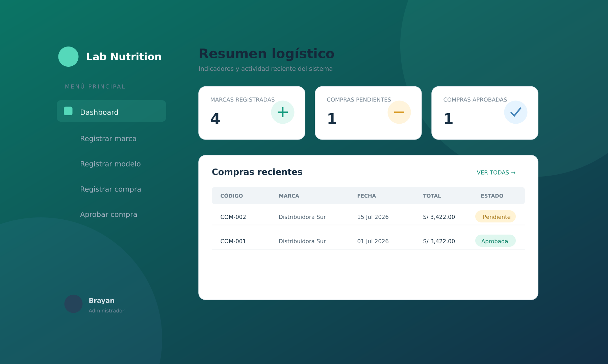
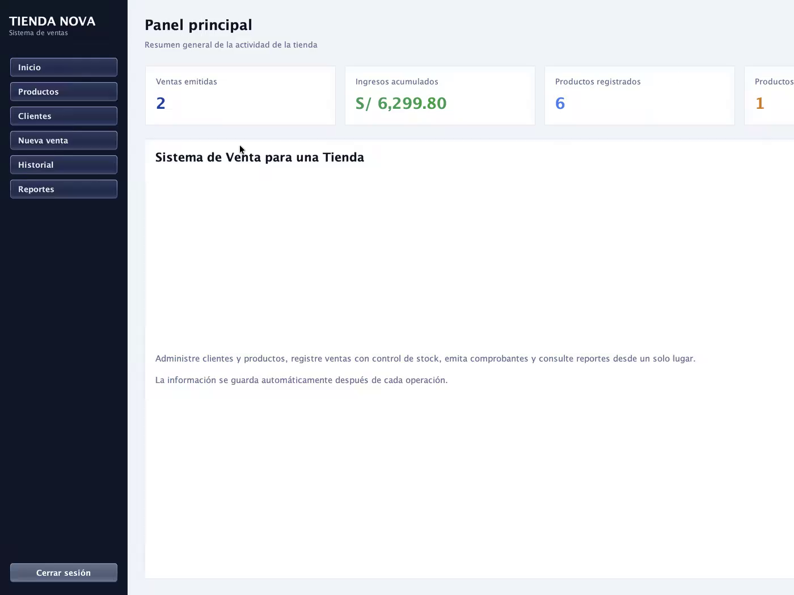

Ingeniería de Sistemas
Universidad Tecnológica del Perú · En curso
Soy Brayan Borja, estudiante de Ingeniería de Sistemas con enfoque en análisis de datos y desarrollo. Construyo software organizado, modelos de datos confiables y experiencias digitales pensadas para resolver problemas reales.
Perfil profesional
Disfruto entender cómo funciona un proceso antes de escribir una sola línea de código. Esa mirada me ayuda a crear soluciones simples de mantener y cómodas para quien las usa.
Mi formación combina programación orientada a objetos, modelado de bases de datos y diseño de interfaces. Profundizo en SQL, Power BI y herramientas que permiten convertir datos en información clara para tomar mejores decisiones.
Universidad Tecnológica del Perú · En curso
Análisis, automatización y desarrollo de sistemas
Prácticas preprofesionales · Perú
Primero el problema, luego la herramienta.
Estructura clara, lógica consistente y buen criterio.
Probar, escuchar y corregir con intención.
Proyectos seleccionados
Dos casos reales sustentados con código, documentación, pruebas e imágenes del trabajo desarrollado.

Dashboard · Gestión logísticaDiseñé y documenté un prototipo logístico interactivo para registrar marcas, modelos y compras, además de aprobar o rechazar operaciones desde un flujo claro.
El archivo entregado genera nueve pantallas en Figma mediante JavaScript, componentes, variables y estados. La tarea “Registrar modelo” se evaluó con una sesión moderada y cuatro respuestas no moderadas.

Captura del sistema · Java SwingDesarrollé una aplicación de escritorio que centraliza clientes, productos, ventas, stock, comprobantes, historial y reportes para una tienda.
La solución separa interfaz, reglas de negocio, dominio y persistencia. El código fue compilado con JDK 17 y los once casos documentados quedaron conformes.
Habilidades
Me importa más entender bien los fundamentos que coleccionar tecnologías. Este es el conjunto con el que trabajo y sigo profundizando.
Programación orientada a objetos, lógica y construcción de interfaces web.
Modelado relacional, consultas, limpieza y visualización de información.
Flujos, componentes, pruebas de usabilidad y sistemas de diseño.
Versionado, documentación y comunicación visual de soluciones.
En qué estoy trabajando
Resolver problemas con mejor estructura y criterio técnico.
Crear análisis reproducibles y dashboards orientados a decisiones.
Construir sistemas confiables que conecten procesos e información.
Contacto profesional
Estoy disponible para prácticas preprofesionales y oportunidades donde pueda aportar en desarrollo, datos o mejora de procesos mientras continúo fortaleciendo mi experiencia profesional.
Disponible para procesos de selección y entrevistas